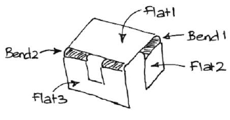
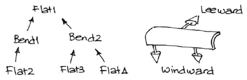
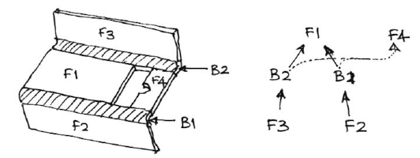
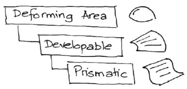
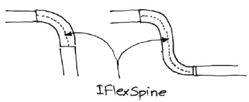
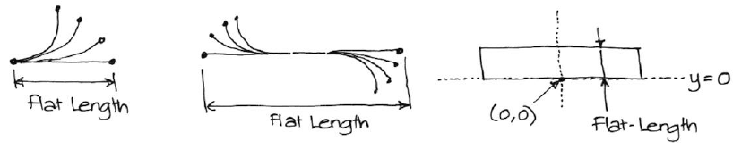
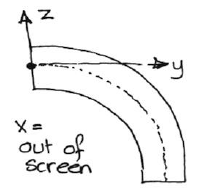
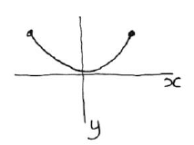
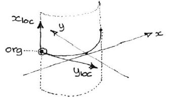
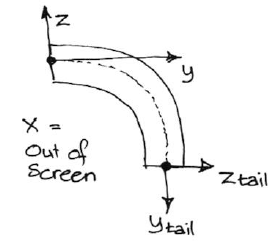

1005BendAreaModeling
product: flux org: metamation tags: [metamation, knowledge-base, flux, notes, legacy, dev] type: note project: Flux source: Notes/Dev/1005.BendAreaModeling.ftx updated: 2026-07-13
1005 ◉ Bend Area Modeling
[!info]- Revision history
Rev Date Author Note V1 2013-06-06 AV V2 2014-04-22 AV Added some documentation on SequenceSign

Sheet metal models contain some areas that are flat and some that bend. These connect only to each other, and in Flux are modeled using E3Plane and E3Flex entities. Planes can connect to Flexes and flexes to planes but no plane-plane or Flex-Flex connections are possible.Note that Bend2 contains two seemingly disjointed pieces, but this is actually a single entity since these two bends are hard-bound to each other (they cannot be processed separately). A typical model forms a tree1 with the base-plane as the root. Alternate levels in this tree are bends

In this tree each bend connects to a flat on the up (or Leeward) side and to one or more on the down (or Windward side).
In the more general case, there could be 2 or more connections even on the leeward side. Consider this model, with F1 as the baseplane:

Both B1 & B2 are connected to F4 on their leeward side. However, this is a weaker connection to their connection to F1, which is the one and only dominant leeward connection2.
Deformable areas

Here's the hierarchy of deformation operations on the right.
All deformations possible cannot be used for sheet-metal. Here, we deal only with a subset of these deformations, which are developable deformations. These are deformed surfaces that can be unfolded flat without any area changes. For example a section of a cone can be unfolded flat without any area change. However, a section of a sphere cannot — a sphere is not developable, while a cone is. Mostly, though, we are dealing with prismatic deformation, where there the deformation is happening only in 2-dimensions across a cross section, which can then be extruded in a straight line. We will therefore focus on prismatic deformations.
IFlexSpine
IFlexSpine provides the interface used to describe flexure or bending in 2D (the cross-section). Simpy put, the spine is the center-line through the cross-section of a bending area:

IFlexSpine defines an interface, and we can provide multiple implementations of this (to support air-bends, hems, Z-bends etc). To convert this cross-section into a surface, we have to map a UV curve (a trim-curve) to it. The UV curve has the same Y-height as the flat-length of the IFlexSpine and must extend from Y=0 to Y=FlatLength.

The origin point of the UV curve is mapped to the start point of the flex-curve (the leeward side point)
interface IFlexSpine {
Pline GetSpine (double bendLie); // Gets the spine at a given bending lie
double Thickness; // Gets the thickness
}
A bendLie of 0 corresponds to fully-flat, while bendLie of 1 corresponds to fully folded. This returns a pline where the start point should be connected to the leeward plane and the end-point should be connected to the windward.
Mating E3Plane and E3Flex objects
The mating of the IFlexSpine is done only to the parent (the E3Plane connected to leeward).
/dev/img/1005.8.png)
On the plane, the coordinate system is established thus:
| Variable | Meaning |
|---|---|
| Org | Center of the sidewall where the E3Flex is to connect (we are using only thick-plane, true-shape models here) |
| XVec | Along the edge direction (from edge.P1 to edge.P2) |
| YVec | Facing out-ward (opposite of edge.InVec) |
| ZVec | Computed as XVec * YVec |

In this coordinate system, the bend itself might be +ve (towards the +Z direction) or negative (-Z direction).
The coordinate system on the E3Flex is so established to make it connect neatly to the plane. It is clear that the cross-section spine should now be interpreted as being in the YZ space. For the previous example, here is how it should look (the X axis is coming out of the paper).
So: the E3Plane provides a Socket coordinate system to which the E3Flex Plug coordinate system is mated. Consider an IFlexSpine whose Pline looks like this:

Now, when we make a 3D object out of this by using the trim curve to loft this, we will get a 3D object like this (defined in its own coordinate space, by extruding the trim curve X direction along Z):

Now, let's try to define the origin, X and Y vectors for the Plug coordinate system for this E3Flex:
Xlocal is the z-axis of the world
Ylocal is computed based on the initial slope of the pline
Org is computed based on the P1 point of the pline
Thusly
Pline pline = IFlexSpine.GetSpine (0.5);
Point2 a = pline.P1;
Vector2 av = Vector2.UnitVec (pline[0].GetSlopeAt (0));
Point3 Org = Point3 (a.X, a.Y, 0);
Vector3 XVec = Vector3 (0, 0, 1); // the Z axis is the local X-vector
Vector3 YVec = Vector3 (av.X, av.Y, 0);
This Org, XVec, YVec now defines the plug coordinate system for this E3Flex, and this can be mated to the corresponding socket in the parent E3Plane.
Tail coordinate
For any E3Flex we can also define a Tail coordinate system easily:

And this is how we could compute that
Pline pline = IFlexSpline.GetSpine (lie);
Segment seg = pline[pline.Count - 1];
Point2 b = seg.B;
Vector2 bv = seg.GetSlopeAt (1.0);
Org = Point3 (b.X, b.Y, 0);
XVec = Vector3.ZAxis;
YVec = Vector3 (bv.X, bv.Y, 0);
Note: As the lie changes the tail coordinate system will move around, but so will usually the Plug coordinate system. This is because the spine may be define in such a manner that the start point is not fixed. See below — in this spine, the start point moves around as the lie changes, and this might actually be a good way to define a simple air-bending spine to provide for automatic simulation-ready model-sinking etc.
class E3Flex
With these definitions, we can now define an E3Flex class like this
class E3Flex {
public IFlexSpine Spine; // This provides the cross-section of bending
public Pline[] Trims; // The set of trimming curves (multiple pieces, holes possible)
CoordSystem GetPlugCS (double bendLie); // The coordinate system on the plug side
CoordSystem GetTailCS (double bendLie); // coordinate system on the tail side
E3Plane[] Leeward; // Set of planes connected to our leeward edge
double FlatLength; // the flat-length
Mesh3 GetMesh (double bendLie); // the mesh of this at a particular lie
}
Correspondingly, in the E3Plane objects, we provide sockets where the E3Flux objects connect3
class E3Plane {
...
Tuple<E3Flex, CoordSystem> [] Sockets ; // Flex objects connect to these
}
Posing a Model
A well-formed, bending-ready sheet metal model has these characteristics:
- It is simply connected — no loops, no disjoint pieces
- It contains only planes and flexes (E3Plane and E3Flex objects)
- There is a unique BasePlane (typically the largest plane in the model)
- Each plane has zero or more flexes connected to it (on its windward side).
- Each Flex has zero or more planes conneted to it on its windward side.
So the model forms a simple tree, with the BasePlane as the root and alternate layers of the tree contain planes and flexes.
Each Flex represents a point of flexure and can go between fully folded (lie = 1) to fully flat (lie = 0). As a flex deforms, it moves all its windward descendants along (that is, the sub-tree under that flex). Since the base-plane is at the root and is windward of nobody, it follows that the base-plane never moves, but all other entities in the model could move/deform as the flexes change their lies.
To capture the state of a model for display, the PoseSheet class is very useful. This maintains a pose or a transformation matrix for each entity. For the flexes, it also maintains a Mesh that captures the current (possibly partially bent) state of this Flex. We construct a PoseSheet thus
PoseSheet ps = new PoseSheet (model);
Then, we can find out how many flexes there are in this model
int cFlexes = ps.Flexes.Length;
We can walk through all the entities (planes and flexes and draw them thus)
foreach (PoseSheet.Entry e in ps.Entries) {
PushTransform (e.Xfm);
DrawMesh (e.Mesh);
PopTransform ();
}
Initially, a PoseSheet is constructed with all the flexes fully folded and the entities are therefore in their fully-folded (home) position. So, all the transformation matrices are identity matrices at this point. We can now pose the model to some arbitrary state, where each of the flexes is in any condition between 0 and 1. Thus
ps.SetLies (new double[] { 0, 0.5, 0.5, 1 });
This sets the first flex flat (lie = 0), the next two partially folded, and the final one fully folded. After this, reading back the ps.Entries list will return entries with some transformation matrices updated, and with some meshes regenerated to reflect the changed state of some of these flexes.
The number of doubles you pass in for ps.SetLies must match the number of flexes in the model (ps.Flexes.Length). The flexes are listed in topological order — we start from the base-plane and traverse the tree (in-order traversal) and pick up flexes as we come across them. This is the order in which the lies you pass in are applied. You can get the actual list of flexes in this order like this
E3Flex[] flexes = ps.Flexes;
PoseSheet and bend ops
The PoseSheet provides a very low-level way to pose a model by manipulating every flex to any bending lie. During the actual bending process, not all these possible poses are required — we need only a small subset of them. For example, a pose like { 0, 0.5, 0.5, 1 } is unlikely to be useful since it really represents no particular partially-folded state of the model.
In the simple case, there will be some bends fully done (lie 1), some that are not yet started (lie 0) and one that is partially done — the current bend. So, this could be a viable set of lies
{ 0, 1, 0, 0.5 }
This means the flexes 0 and 2 are not yet started, flex 1 is done, flex 3 is half-done. What this means is that the bending sequence is such that Flex 1 is the first bend, Flex 3 is the next, and Flex 0 and 2 follow after. So, the actual lies being passed in to the SetLies during typical bending simulations are dependent on the bending sequence.
In general, the BendTech will generate a set of lie values and pass them to PoseSheet.SetLies. We ask the Bendtech to pose the model at 50% done of bend 3, and it will be able to compute the lies for all the internal flexes. These are the factors affecting that computation:
Bending sequence
The Flexes in the PoseSheet are in an invariant order that depends only on the topology of the model, and will not change once a model is created. As the bending sequence is shuffled around, the BendTech must take care to map the folding lies to match the underlying invariant topological sequence of Flexes.
Grouping/Ungrouping of bends
Assume there are 4 flexes withIDs 1, 2, 3, 4. Assume further that Flexes 2 and 3 are collinear bends that have now been grouped. So, there are only 3 bend operations: 1, 2+3, 4. If we were halfway through the second bend, the Bendtech would do this
ps.SetLies (new double[] { 1, 0.5, 0.5, 0 });
This means Flex 1 is folded, Flex 2 & 3 are half-folded (they are bend 2), and Flex 4 is flat (this is bend 3)
Pre-bending
Grouping creates the situation that multiple flexes are being ganged together into one bend. Pre-bends are really the opposite situation. Multiple bend operations will work on one Flex. Suppose we have a 90 degree internal angle that is first being pre-bent to 135 internal. So, the first bend takes it half of the way (from lie 0 to lie 0.5) and the second one takes it the remaining bit (from lie 0.5 to 1).
Now, there is just one Flex, but two bend operations. Each bend operation itself will go from not-yet-started (lie 0) to fully complete (lie 1). Lie 1 of the first bend operation corresponds to bending-lie 0.5 for the flex. And Lie 0.5 of the second operation corresponds to bending-lie 0.75 for the Flex.
So one of the basic operations a BendTech can do is this4
double[] BendTech.GetRawLies (int nBend, double fBendLie);
Given a list of flexes in topological order, this can return the lies to which these flexes will need to be set, to pose the model at the given bend-lie of the given bend in sequence. This is what we use to actually pose the model.
Sequence-signature
A higher level way of doing grouping/ungrouping, pre-bending and shuffling of the sequence is by simply calling the BendTech.SetSequence method, and passing in a sequence-signature string.
In the simplest case, the sequence-signature is a simple set of integers, comma-separated like this: "0,3,4". These are assumed to the UIDs5 of E3Flex objects within the model.
It's quite possible that some of these flexes might have multiple phases, and in that case we need to specify the phase with a decimal point. For example, another valid sequence is "0, 3.0, 4, 3.1". This means that the second bend here is the pre-bending for Flex 3, followed finally by the complete bending for Flex 3.
It's also possible that a bend-op contains two separate flexes that are group-bent. In that case, we will specify that sequence like "0, 3.0, 2+4, 3.1". This means that the third bend here is a group-bend made of flexes 2 and 4. Supposing there is a group bend of a hemming, we might end up with a sequence like this: "4, 3.0+5.0, 2, 1, 3.1+5.1"
This can also be read back using the BendTech.SequenceSign property, and is a succinct representation of the entire bend-sequence, including pre-bends and bend grouping.
Converted from the FTex source
Notes/Dev/1005.BendAreaModeling.ftx— see [[Flux Notes]] for the index.
-
Not quite - it's really a DAG (directed acyclic graph) as the subsequent examples will show↩
-
In fact, this connection may not even need to be modeled (except to avoid spurious lines during unfolding - it has no bearing on transformations or display in 3D)↩
-
Changed: We now store the socket CoordSystem right along with the Flex itself (as a property there). This allows us to simplify the E3Plane side of things to a simple list of E3Flex (called Windward).↩
-
Changed: We changed this to BendTech.ApplyToPoseSheet, which computes this list of lies and applies them to the PoseSheet in one operation.↩
-
Each E3Flex is assigned a UID when it is added into the model. This is just a counting-up integer property of the model which is never re-used. Thus, as entities are added/removed to a model, the UID number keeps counting up.↩